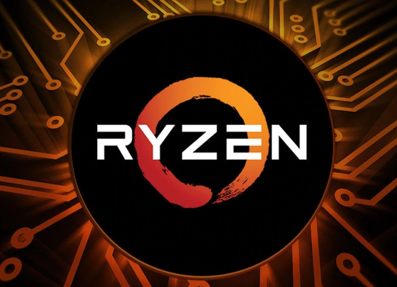

Su Setup Ideal

Servicio
Nos dedicamos a dar servicio de cotización y armado de equipos domesteticos; abarcando ampliamente el ambito del Gamer y el Streamanig, como tambien el hambito profesional dieñando equipos para diseño gráfico, edición, arquitectectura, etc. Nos encargamos de buscar activamente los mejores componentes, como también al mejor precio para que se adapten a sus necesidades, gustos y presupuesto, ademas de encargarmos del armado completo y la configuración necesaria para que usted al recibirlo solo deba conectar y disfrutar de la experiencia de su nueva adquisición.
Equipos Armados y Cotizados
Tabla de Componentes
| Componentes | Modelo |
|---|---|
| Procesador | I5-12600K |
| Gráficas | RTX 3060 |
| Disipador | MasterLiquid ML240 |
| Ram | 16Gg Kinsgton Fury DDR5 |
| Placa Madre | Msi Z-690 PRO |
| PSU | ColorMaster 850w 80plus Gold |
| Gabinete | Gabinete ColerMaster E-ATX |
| Costo | $1.950.000 |

Tabla de componentes
| Componentes | Modelo |
|---|---|
| Procesador | I7-10700K |
| Gráficas | RTX 3070 |
| Disipador | ColerMaster ML360 |
| Ram | 32Gg Basilisk DDR4 |
| Placa Madre | Asus Z-590 |
| PSU | Cougar 750w 80plus Bronze |
| Gabinete | Gabinete Nzxt E-ATX |
| Costo | $2.400.000 |
El Procesador
Escoger un procesador para su equipo es esencial para el uso que quiera darle, sobre todo para los requerimientos que en el ambito gamer y profesional exigen en la actualidad. Lo adecuado para la serie gaming serian las series "5" de las 2 marcas de procesadores actuales (Intel y AMD) especificamente del año 2020 en adelante, sin embargo, para tareas profesionales y más exigente lo ideal para comenzar serian las series 7, pero para muchas tareas es posible que nesecite de mayor poder de calculo llevando la decición de obtar por procesadores mucho más potentes.
Procesadores Ryzen
Los Ryzen son una opcion correcta para todo proposito sobre todo por su alta capacidad de nucleos en la alta gama, como buenas frecuencias en la gama media enespecial en la serie 3000 y 5000 que en los ultimos años han sido lo mejor para crea PC tanto gaming como profesionales, y hasta ahora siguen siendo una opcion my buena.
Procesadores Intel Core
Los I-core estuvieron durante un tiempo por debajo de Ryzen lo que no significa que su desempeño fuera estrictamente inferior, aparte que a iferencia de AMD Intel ofrece procesadores de gamma baja y de entrada para personas que no requieran o no quieran gastar demasiado en un Pc, siendo lo recomendable comenzar con la 10° generación en adelante.
La Tarjeta Gráfica
Si obta por un computador de caracteristicas gamer y/o profesionales la tarjeta grafica ocupa un papel fundamental en el manejo de lo graficos proyectados por el computador siendo clave para visiualizar texturas de alta complejidad relacionado a la resolucion a la cual obte por visualizarla, en estos tiempos existen 2 marcas competidoras Nvidia y AMD al cual en unos meses más se sumara Intel